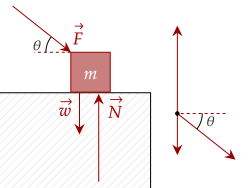
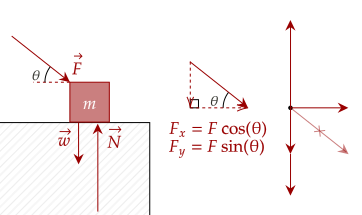
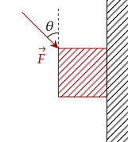
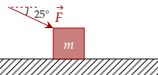
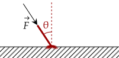

So far, all the forces we've been dealing with have all been vertical or horizontal. Further, all the surfaces we've dealt with have been completely horizontal and vertical.
The first half of this sentence isn't that big of a deal; we've dealt with velocity at an angle before in our study of projectiles, so we just use the same strategy we did before to deal with problems of that sort.

You may notice something strange with the free body diagram; the normal force appears to be really large compared to the weight of the object.
We can use vector decomposition (like we did in projectile motion) to get the magnitudes of the horizontal and vertical force of the diagonal force. Then, we can update the free body diagram with the components.

Here, we can see that the force has been "crossed out". When we draw free body diagrams, you should cross out or squiggle out a force if you have broken it down into its components. Here, we can also see why the normal force is so high; the vertical component of the diagonal force pushes the box into the ground as well.
Question 1
Draw a free body diagram for the following box pushed against a rough surface. The box is at rest relative to the surface.
Answer
We first decompose the force at an angle. The horizontal component of the force pushes the box against the wall, so we draw the normal force of the wall to the box.
The vertical component pushes the box down, adding to its weight. Given that the surface is rough and the box is at rest relative to the surface, this means the static friction has to have the same magnitude as the weight and vertical component combined.

Recall in kinematics how it was helpful to separate the horizontal and vertical velocities. In dynamics, we can use this same strategy to solve more complex problems with forces at an angle.
This may feel like a leap in difficulty, however just recall what we recalled when we jumped from one-dimensional motion to two-dimensional motion; this is just two cases of one-dimensional dynamics.
Exercise 1a
(HRK E4.7a) A 5.1-kg block is pulled along a frictionless floor by a cord that exerts a 12N force at an angle 25° above the horizontal. What is the horizontal acceleration of the block?
Solution
We first decompose the force at an angle. We know the horizontal component is the adjacent side of the 25°, so we use cosine.
Now, we know there is no other net horizontal force. We can freely use this to get the acceleration, since we are given the mass. To not confuse ourselves, let's add a subscript "x".
Substituting in the values, we have that the horizontal acceleration is 2.1m/s².
Exercise 1b
(HRK E4.7b) In the exercise above, the force is slowly increased. What is the magnitude of the force just before the block is lifted off the floor?Solution
There are two vertical forces currently acting on the box; that is the normal force, and the weight. As we pull the string upwards, the normal forces relaxes and weakens (recall that the normal force is a lazy force). The block starts to lift off one the normal force is zero.
From trigonometry, the vertical force is the opposite side of the 25° angle, so we use sine.
Plugging in our values, we get that the magnitude of the force has to be 120N.
Since now there are functions such as the sine and cosine function which something give irrational numbers, it is helpful to do all the algebraic manipulation first and then plug in the values.
This method reduces errors to mistyping numbers and is generally more flexible. We should try to adopt this method, instead of relying on solving each value on at a time.
Of course, sometimes, this method is harder in problems that can be solved easier with the actual value, like in kinematic problems.
Exercise 2
(LSM P6.62a) A contestant in a winter sporting event pushes a 45.0-kg block of ice across a frozen lake, with a coefficient of static friction being 0.1, as shown in the figure below. Calculate the minimum force he must exert to get the block moving.
Solution
There are three vertical forces acting on the box. We have the vertical component of the contestant, the weight, and the normal force balancing both. Thus, the normal force here is not just the weight. All in all, the net vertical force is zero.
We keep this for later. The horizontal component has two forces; the static force and the horizontal component of the contestant. We use the maximum strength of the static force. Setting the net horizontal force as zero gives us this equation.
Now we input the value we collected for the normal force above.
We now have the equation for the minimum force. Plugging in all the values, we have that the minimum force needed is 51N.
Problem 1
(HRK P5.7b) The handle of a floor mop makes an angle θ with the vertical direction. Let be the coefficient of kinetic friction between mop and floor and the coefficient of static friction between mop and floor. Neglect the mass of the handle.Show that if θ is smaller than a certain angle φ the mop cannot be made to slide across the floor no matter how great a force is directed along the handle. What is the angle φ?

Solution
Since we neglect the mass, the only vertical force causing the normal force is then the vertical component of the force pushing on the handle. Setting the net force to be zero, since the mop isn't moving upwards anyway, gives us this equation.
The only horizontal forces are the static friction and the horizontal component of the handle's force. Now, the static friction has to be greater than the handle force so that the mop does not move. We write it down like below.
We then substitute the value of the normal force we collected.
Now, we use a definition for the tangent function.
Thus, using the arctangent function, we get this value. We note that this angle is the one that θ can't be less than.
With this knowledge, we can use dynamics to solve more complicated problems which relate to kinematics. We return once again to our kinematic equations.
Problem 2a
(HRK P4.3a) A rocket with mass 3030 kg is fired from rest from the ground at an elevation angle of 58.0°. The motor exerts a thrust of 61.2 kN at a constant angle of 58.0° with the horizontal for 48.0 s and then cuts out. Calculate the altitude of the rocket at motor cut-out.Solution
To get the altitude, we need the vertical force, which should give us the vertical acceleration. Given the constant acceleration, we then use the kinematic equations to get the vertical displacement.
Given 58° from the horizontal, the vertical force is opposite to the angle. We use sine. There are two vertical forces; the vertical force component and the weight.
Computing, we have the constant acceleration 7.329m/s². Now, we just use the kinematic equations to get the height. We know the initial velocity is at rest and the time.
Problem 2b
(HRK P4.3b) Find the total distance from firing point to impact in the previous problem.Solution
The first portion of this problem is the distance travelled until motor cut-out. The second portion is a projectile motion problem with initial height.
Let's begin by getting the horizontal acceleration.
The acceleration is 10.70m/s². We then get the horizontal displacement.
Giving us the horizontal displacement until cut-out is 12326.4m. Now, we get the vertical velocity at cut-out; this becomes the initial vertical velocity for projectile motion.
Now, given the height, we compute for the time it takes for the rocket to fall down to the ground.
Using the quadratic equation gives us the time taken is 90.77s. One more thing we need is the horizontal velocity at cut-out; this becomes the constant horizontal velocity in projectile motion.
Finally, we get the horizontal displacement for the projectile motion portion.
Giving us our answer of 58900m.